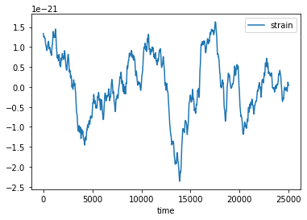
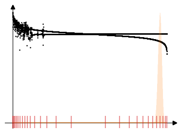

%matplotlib inline
%load_ext autoreload
! pip install git+https://github.com/avivajpeyi/pspline_psd.git -q
error: subprocess-exited-with-error
× python setup.py bdist_wheel did not run successfully.
│ exit code: 1
╰─> [39 lines of output]
Traceback (most recent call last):
File "<string>", line 2, in <module>
File "<pip-setuptools-caller>", line 34, in <module>
File "/tmp/pip-install-8li77mh3/logging_22bed6f80b514a848b04122b10347dcd/setup.py", line 3, in <module>
setup(name = "logging",
File "/opt/hostedtoolcache/Python/3.8.17/x64/lib/python3.8/distutils/core.py", line 134, in setup
ok = dist.parse_command_line()
File "/opt/hostedtoolcache/Python/3.8.17/x64/lib/python3.8/distutils/dist.py", line 483, in parse_command_line
args = self._parse_command_opts(parser, args)
File "/opt/hostedtoolcache/Python/3.8.17/x64/lib/python3.8/site-packages/setuptools/dist.py", line 951, in _parse_command_opts
nargs = _Distribution._parse_command_opts(self, parser, args)
File "/opt/hostedtoolcache/Python/3.8.17/x64/lib/python3.8/distutils/dist.py", line 539, in _parse_command_opts
cmd_class = self.get_command_class(command)
File "/opt/hostedtoolcache/Python/3.8.17/x64/lib/python3.8/site-packages/setuptools/dist.py", line 790, in get_command_class
self.cmdclass[command] = cmdclass = ep.load()
File "/opt/hostedtoolcache/Python/3.8.17/x64/lib/python3.8/site-packages/pkg_resources/__init__.py", line 2450, in load
return self.resolve()
File "/opt/hostedtoolcache/Python/3.8.17/x64/lib/python3.8/site-packages/pkg_resources/__init__.py", line 2456, in resolve
module = __import__(self.module_name, fromlist=['__name__'], level=0)
File "/opt/hostedtoolcache/Python/3.8.17/x64/lib/python3.8/site-packages/wheel/bdist_wheel.py", line 29, in <module>
from .metadata import pkginfo_to_metadata
File "/opt/hostedtoolcache/Python/3.8.17/x64/lib/python3.8/site-packages/wheel/metadata.py", line 15, in <module>
from .vendored.packaging.requirements import Requirement
File "/opt/hostedtoolcache/Python/3.8.17/x64/lib/python3.8/site-packages/wheel/vendored/packaging/requirements.py", line 8, in <module>
from ._parser import parse_requirement
File "/opt/hostedtoolcache/Python/3.8.17/x64/lib/python3.8/site-packages/wheel/vendored/packaging/_parser.py", line 10, in <module>
from ._tokenizer import DEFAULT_RULES, Tokenizer
File "/opt/hostedtoolcache/Python/3.8.17/x64/lib/python3.8/site-packages/wheel/vendored/packaging/_tokenizer.py", line 6, in <module>
from .specifiers import Specifier
File "/opt/hostedtoolcache/Python/3.8.17/x64/lib/python3.8/site-packages/wheel/vendored/packaging/specifiers.py", line 27, in <module>
from .utils import canonicalize_version
File "/opt/hostedtoolcache/Python/3.8.17/x64/lib/python3.8/site-packages/wheel/vendored/packaging/utils.py", line 8, in <module>
from .tags import Tag, parse_tag
File "/opt/hostedtoolcache/Python/3.8.17/x64/lib/python3.8/site-packages/wheel/vendored/packaging/tags.py", line 5, in <module>
import logging
File "/tmp/pip-install-8li77mh3/logging_22bed6f80b514a848b04122b10347dcd/logging/__init__.py", line 618
raise NotImplementedError, 'emit must be implemented '\
^
SyntaxError: invalid syntax
[end of output]
note: This error originates from a subprocess, and is likely not a problem with pip.
ERROR: Failed building wheel for logging
^C
ERROR: Operation cancelled by user
[notice] A new release of pip is available: 23.0.1 -> 23.2.1
[notice] To update, run: pip install --upgrade pip
Example: LISA White Dwarf background#
import numpy as np
import pandas as pd
DATA_URL = "https://gist.githubusercontent.com/avivajpeyi/67c3129ac75e6e9da1f75209de7ec5fe/raw/849ee5a2bee139ac0cdcce10720630d7a668a92d/lisa_wd_strain"
data = np.loadtxt(DATA_URL, delimiter=" ")
# only keep first 5000 points for speed
data = data[:5000]
data = pd.DataFrame(data, columns=["strain"])
dt = 5.00000079
data["time"] = np.arange(0, len(data) * dt, dt)
data.plot(x="time", y="strain");

from pspline_psd.fourier_methods import get_periodogram
import matplotlib.pyplot as plt
pdgrm = get_periodogram(timeseries=data.strain.values)
plt.plot(pdgrm)
[<matplotlib.lines.Line2D at 0x125cf61c0>]
plt.semilogx(np.log(pdgrm))
[<matplotlib.lines.Line2D at 0x125db8850>]
scaled_data = np.log(pdgrm)
scaled_data = scaled_data - np.mean(scaled_data)
scaled_data = scaled_data + np.abs(np.min(scaled_data))
plt.semilogx(scaled_data)
[<matplotlib.lines.Line2D at 0x13a68a9a0>]
findfont: Font family ['sans-serif'] not found. Falling back to DejaVu Sans.
findfont: Generic family 'sans-serif' not found because none of the following families were found: Liberation Sans
findfont: Font family ['cursive'] not found. Falling back to DejaVu Sans.
findfont: Generic family 'cursive' not found because none of the following families were found: Liberation Sans
findfont: Font family ['sans'] not found. Falling back to DejaVu Sans.
findfont: Generic family 'sans' not found because none of the following families were found: Liberation Sans
findfont: Font family ['sans'] not found. Falling back to DejaVu Sans.
findfont: Generic family 'sans' not found because none of the following families were found: Liberation Sans
findfont: Font family ['sans'] not found. Falling back to DejaVu Sans.
findfont: Generic family 'sans' not found because none of the following families were found: Liberation Sans
from pspline_psd.sample.spline_model_sampler import fit_data_with_pspline_model
mcmc = fit_data_with_pspline_model(
data=scaled_data,
Ntotal=2000,
burnin=1000,
degree=3,
eqSpaced=False,
)
from pspline_psd.plotting.plot_spline_model_and_data import plot_spline_model_and_data
fig = plot_spline_model_and_data(mcmc.data, mcmc.psd_quantiles, knots=mcmc.knots, separarte_y_axis=True)

# WE NEED A LOG-SPLINE MODEL